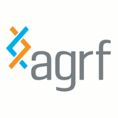
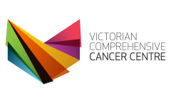
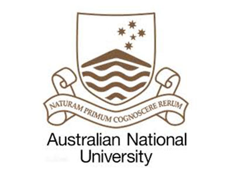
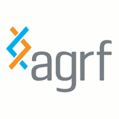
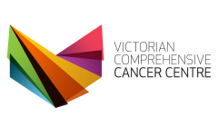
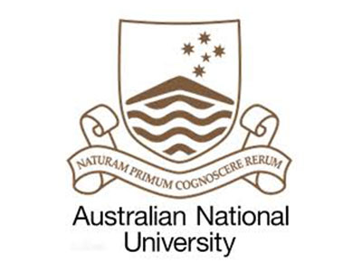

PoreCamp Australia 2017
A bootcamp to learn about operating the Oxford Nanopore MinION
Details
Camp Objectives
- Develop best wet-lab practises to produce a high-quality MinION library.
- Hands-on experience, running your MinION on your own computer.
- Discover suitable data-handling methods for MinION output.
- Discuss latest bioinformatic methods for analysis of real-time nanopore data.
Trainers
- Ken McGrath (AGRF)
- Alexis Lucattini (AGRF)
- Lavinia Gordon (AGRF)
- Louise Judd (UniMelb)
Committee
- Ken McGrath, AGRF, Brisbane
- Benjamin Schwessinger, ANU, Canberra
- Kat Holt, UniMelb, Melbourne
- Torsten Seemann, VLSCI, Melbourne
- Martin Smith, Garvan, Sydney
- Lavinia Gordon, AGRF, Melbourne
- Alexis Lucattini, AGRF, Melbourne
- Aaron Darling, UTS, Sydney
Sponsors
 




